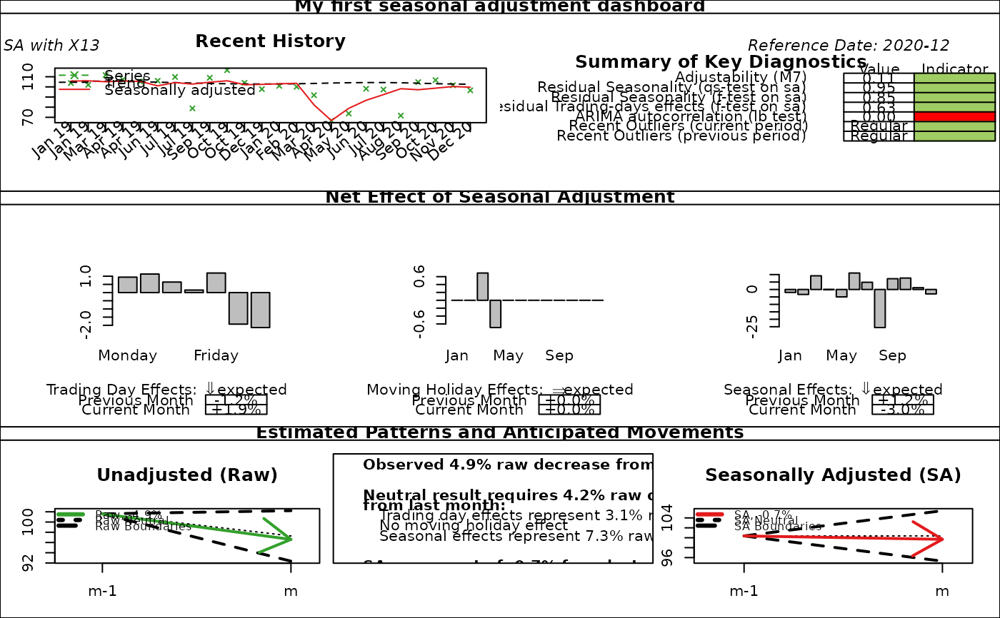

R/sc_dashboard.R
plot.sc_dashboard.RdFunction to plot Statistics Canada dashboard of a seasonal adjustment model.
# S3 method for class 'sc_dashboard'
plot(
x,
main = "Seasonal Adjustment Dashboard",
subtitle = "",
reference_date = TRUE,
raw_color = "#33A02C",
sa_color = "#E31A1C",
trend_color = "black",
...
)sa_model() reproduces Statistics Canada dashboard used to provide a snapshot snapshot of an single seasonal adjustment model at a point in time and to point out some possible problems (see references).
The dashboard is divided into four sections:
Recent History (top left panel): plot of the raw series, the seasonal adjusted series and the trend for the most recent periods (n_recent_obs last observations: 24 by default). It is intended to identify trendF direction, overall volatility and obvious outliers.
Summary of Key Diagnostics (top right panel):
Adjustability (only for X13 models): M7 statistic. Colors: red if M7 > 1.75, yellow if 1.25 < M7 < 1.75 and green if M7 < 1.25.
Residual seasonality: qs (auto-correlations at seasonal lags) and f (Friedman) test on seasonal adjusted series. Colors: red if p-value < 0.01, yellow if 0.01 < p-value < 0.05 and green if p-value > 0.05.
Residual trading-days effects: f (Friedman) test on seasonal adjusted serie. Colors: red if p-value < 0.01, yellow if 0.01 < p-value < 0.05 and green if p-value > 0.05.
Independence of RegARIMA residuals: Ljung-Box test. Colors: red if p-value < 0.01, yellow if 0.01 < p-value < 0.05 and green if p-value > 0.05.
Recent outliers on last (t) and penultimate (t-1) observation. Colors: Red if there is an extreme value (only for X13: when table C17 equals to 0), yellow if there is an outlier in the RegARIMA model and green otherwise.
Estimated Patterns and Anticipated Movements (middle panel): estimated trading day, moving holiday and seasonal pattern. It presents expected movement in unadjusted series based on the current and previous period.
Net Effect of Seasonal Adjustment (bottom panel): movement in the raw series, compared to typical ranges centered around “neutral” value (when the seasonal adjusted series of the last period is equal to the penultimate period). It also shows the movement in the seasonally adjusted series, compared to typical ranges.
KIRCHNER R., LADIRAY D., MAZZI G. L. (2018), "Quality Measures and Reporting for Seasonal Adjustment", edited by G. L. Mazzi, co-edited by D. Ladiray, European Union, Luxembourg. https://ec.europa.eu/eurostat/web/products-manuals-and-guidelines/-/KS-GQ-18-001
MATTHEWS S. (2016), "Quality Assurance of Seasonal Adjustment for a Large System of Time Series", 36th International Symposium on Forecasting Santander, Spain.
data <- window(RJDemetra::ipi_c_eu[, "FR"], start = 2003)
sa_model <- RJDemetra::x13(data, "RSA5c")
dashboard_data <- sc_dashboard(sa_model)
plot(dashboard_data, main = "My first seasonal adjustment dashboard",
subtitle = "SA with X13")
